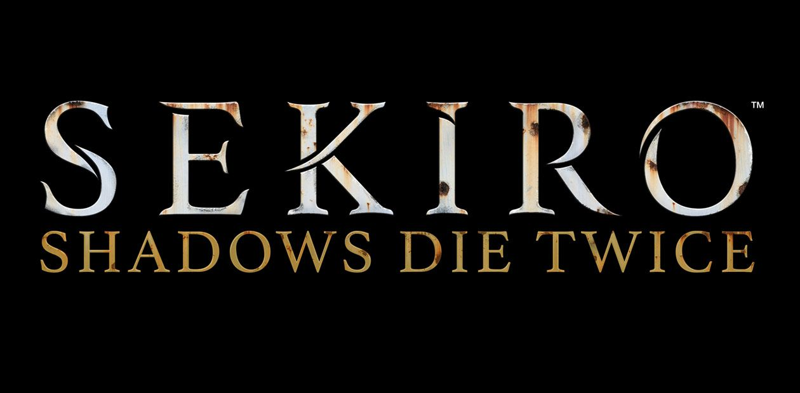

Sekiro: Shadows Die Twice is an action-adventure game released in 2019 by Activision and developed by FromSoftware. The game follows Wolf, a shinobi, as he attempts to exact revenge on a samurai clan that attacked him and kidnapped his lord.